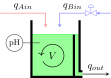
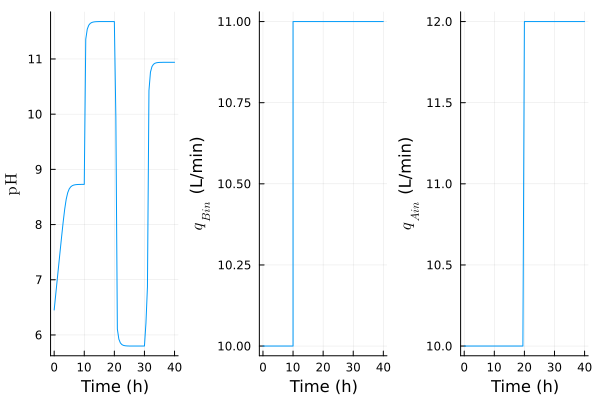
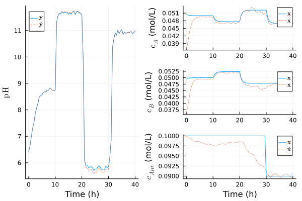

Manual: Nonlinear Design (DAE)
This tutorial is currently under construction. Only the modeling and the estimation parts are written for now.
Nonlinear Model (DAE)
In this example, the goal is to control the pH of a solution in a continuously stirred tank reactor (CSTR) for neutralization. The manipulated input is the inlet flow rate of a strong base in L/min, while the inlet flow rate of a weak acid, also in L/min, is a measured disturbance:
\[\begin{aligned} \mathbf{u} &= q_{Bin} \\ \mathbf{y} &= \mathrm{pH} \\ \mathbf{d} &= q_{Ain} \end{aligned}\]
An overflow weir draws the neutralized solution, effectively keeping a constant volume of solution inside the tank. The following figure depicts the pH neutralization process:

Instantaneous Charge Balance
The solution must remain electrically neutral, i.e. the sum of the charges of all ions must equal zero. The ions in this case study are:
- Hydrogen $[\mathrm{H}^+]$
- Sodium $[\mathrm{Na}^+]$
- Hydroxide $[\mathrm{OH}^-]$
- Acetate $[\mathrm{Ac}^-]$
The instantaneous charge balance leads to:
\[0 = [\mathrm{H}^+] + [\mathrm{Na}^+] - [\mathrm{OH}^-] - [\mathrm{Ac}^-]\]
The water dissociation constant and the weak acid equilibrium constant are respectively defined by:
\[\begin{aligned} K_w &= [\mathrm{H}^+][\mathrm{OH}^-] \\ K_a &= \frac{[\mathrm{H}^+][\mathrm{Ac}^-]}{[\mathrm{H}\mathrm{Ac}]} \end{aligned}\]
The following notation highlights three key concentrations in the model:
\[\begin{aligned} a_H &= [\mathrm{H}^+] \\ c_A &= [\mathrm{H}\mathrm{Ac}] + [\mathrm{Ac}^-] \\ c_B &= [\mathrm{Na}^+] \end{aligned}\]
in which $c_A$ represents the total concentration of the acid species in the reactor (mol/L), composed of an undissociated acid $\mathrm{H}\mathrm{Ac}$ and the acetate ion $\mathrm{Ac}^-$. Substituting the constants, algebraic and state variables into the charge balance leads the algebraic equation:
\[0 = a_H + c_B - \frac{K_w}{a_H} - \frac{K_a c_A}{K_a + a_H}\]
Reduction to an ODE
The algebraic equation can be further manipulated to produce this cubic expression:
\[0 = a_H^3 + (c_B + K_a) a_H^2 + \big(K_a(c_A + c_B) + K_w \big) a_H - K_w K_a\]
We could extract the positive real root of this expression inside the output function h! to transform the system to an ODE, effectively avoiding the complexity of DAEs. When possible, plant model should be constructed with the specialized NonLinModel for ODEs. This tutorial will still treat the system as a DAE to illustrate its API.
The pH is:
\[\mathrm{pH} = -10 \log_{10}(a_H) ⟹ a_H = 10^{-\mathrm{pH}}\]
Mass Balance
Applying a mass balance on the weak acid $A$ and the strong base $B$ invariants leads to the differential equations:
\[\begin{aligned} \dot{c}_A(t) &= \frac{60}{V}(q_{Ain} c_{Ain} - q_{out} c_{Aout}) \\ \dot{c}_B(t) &= \frac{60}{V}(q_{Bin} c_{Bin} - q_{out} c_{Bout}) \end{aligned}\]
in which the concentrations $c$ are in mol/L, the tank volume $V$ in L and the volumetric flow rates $q$ in L/min. The accumulation terms $\dot{c}$ are in mol/(L h) because of the 60 factors. By assuming a perfectly mixed reactor and a constant volume because of the weir, the following relations compute the outflow terms:
\[\begin{aligned} c_{Aout} &= c_{A} \\ c_{Bout} &= c_{B} \\ q_{out} &= q_{Ain} + q_{Bin} \end{aligned}\]
Model Construction
The state and the algebraic vectors are respectively defined as:
\[\begin{aligned} \mathbf{x} &= \begin{bmatrix} c_A \\ c_B \end{bmatrix} \\ \mathbf{a} &= \mathrm{pH} \end{aligned}\]
Alternatively, defining the algebraic vector as $\mathbf{a} = a_H$ is a valid realization, but a vastly inferior choice numerically since $a_H$ spans around 14 orders of magnitude ($10^{-1}$ to $10^{-14}$) while the pH is bounded between roughly 1 to 14. Moreover, it avoids a log10 call that is undefined for negative values.
The NonLinModelDAE constructor expects that the state dynamics and the algebraic equation are combined into a single fq!(ẋ, res, x, a, u, d, p) -> nothing function that modifies both ẋ and res arguments in-place (an out-of-place option is also available), with the state dynamics and the residual of the algebraic equation, respectively:
using ModelPredictiveControlcalc_a_H(pH) = 10.0^(-pH)calc_ċ_A(c_Ain, q_Ain, c_Aout, q_out) = (60/V)*(q_Ain * c_Ain - q_out * c_Aout)calc_ċ_B(c_Bin, q_Bin, c_Bout, q_out) = (60/V)*(q_Bin * c_Bin - q_out * c_Bout)calc_res(a_H, c_A, c_B, Kw, Ka) = a_H + c_B - (Kw / a_H) - (Ka * c_A / (Ka + a_H))function fq!(ẋ, res, x, a, u, d, p) c_Ain, c_Bin, Kw, Ka, V = p q_Ain, q_Bin = d[1], u[1] # [L/min], [L/min] c_A, c_B = x[1], x[2] # [mol/L], [mol/L] pH = a[1] # [-] q_out = q_Ain + q_Bin # [L/min] c_Aout = c_A # [mol/L] c_Bout = c_B # [mol/L] a_H = calc_a_H(pH) ẋ[1] = calc_ċ_A(c_Ain, q_Ain, c_Aout, q_out) ẋ[2] = calc_ċ_B(c_Bin, q_Bin, c_Bout, q_out) res[1] = calc_res(a_H, c_A, c_B, Kw, Ka) return nothingendA similar in-place function is expected for the model output:
h!(y, _ , a , _ , _ ) = (y .= a; nothing)Providing an initial guess for the state xs_0 and algebraic variable as_0 is important for DAEs, to prioritize positive pH and concentration solution, inter alia:
c_Ain = 0.1 # feed concentration of weak acid [mol/L]c_Bin = 0.1 # feed concentration of strong base [mol/L]Kw = 1.0e-14 # water dissociation constant [mol^2/L^2]Ka = 1.75e-5 # acid dissociation constant [mol/L]V = 1000.0 # reactor volume [L]Ts = 0.5 # Sample time [h]nu, nx, na, ny, nd = 1, 2, 1, 1, 1p = [c_Ain, c_Bin, Kw, Ka, V]vu, vd = [raw"$q_{Bin}$ (L/min)"], [raw"$q_{Ain}$ (L/min)"]vx, vy = [raw"$c_A$ (mol/L)", raw"$c_B$ (mol/L)"], [raw"$\mathrm{pH}$"]transcription = TrapezoidalCollocation()xs_0, as_0 = [0.025, 0.025], [7]plant = NonLinModelDAE(fq!, h!, Ts, nu, nx, na, ny, nd; p=p, xs_0, as_0, transcription)plant = setname!(plant, u=vu, x=vx, y=vy, d=vd)NonLinModelDAE with a sample time Ts = 0.5 s:
├ state optimizer: Ipopt
├ output optimizer: Ipopt
├ transcription: TrapezoidalCollocation
├ jacobian: AutoForwardDiff
├ hessian: nothing
└ dimensions:
│ ├ 1 manipulated inputs u
│ ├ 2 states x
│ ├ 1 algebraic variables a
│ ├ 1 outputs y
│ └ 1 measured disturbances d
└ optimization:
├ 4 decision variables Z
├ 0 linear equality constraints Aeq
└ 4 nonlinear equality constraints geqWe use a TrapezoidalCollocation transcription instead of the default OrthogonalCollocation, since it is less computationnaly expensive and its accuracy and stability is good enough for this case study. A simple open-loop simulation of plant with:
- a bump on the base flow rate $\mathbf{u} = q_{Bin}$
- a bump on the acid flow rare $\mathbf{d} = q_{Ain}$
- a bump on the acid feed concentration $c_{Ain}$ (an unmeasured disturbance)
validates that our DAE is well-posed:
function simDAE(plant, N; x_0) ny, ny, nd, nx = plant.ny, plant.ny, plant.nd, plant.nx Y_data, U_data, D_data, X_data = zeros(ny, N), zeros(nu, N), zeros(nd, N), zeros(nx, N) c_Ain_0 = plant.p[1] setstate!(plant, x_0) x = x_0 for i=1:N u = i ≤ (1N÷4) ? [10.0] : [11.0] d = i ≤ (2N÷4) ? [10.0] : [12.0] c_Ain = i ≤ (3N÷4) ? c_Ain_0 : (c_Ain_0 - 0.01) plant.p[1] = c_Ain y = plant(d) Y_data[:, i] = y U_data[:, i] = u D_data[:, i] = d X_data[:, i] = x x = updatestate!(plant, u, d) end plant.p[1] = c_Ain_0 return SimResult(plant, U_data, Y_data, D_data; X_data)endx_0 = [0.0505, 0.0495]N = 81res = simDAE(plant, N; x_0)Simulation results of NonLinModelDAE with 81 time steps.We plot the results by modifying the x-axis label to substitute the default time units to hours:
using Plotsplot(res, plotu=true, plotd=true, xlabel="Time (h)")
Adaptive Moving Horizon Estimation
The default settings of the MovingHorizonEstimator assume that the measured output is disturbed by a random-walk stochastic process (the pH). This is generally enough to estimate the unmeasured disturbances in steady-state (the acid feed concentration, in this case study). To improve the interpretability of the results and the estimation performances, we can instead disable the default stochastic model and construct an adaptive estimator. We first need to augment the dynamics with our estimated parameter, the acid feed concentration $c_{Ain}$:
calc_ċ_Ain( _ ) = 0function f̂q!(dx̂, res, x̂, a, u, d, p̂) c_Bin, Kw, Ka, V = p̂ q_Ain, q_Bin = d[1], u[1] c_A, c_B = x̂[1], x̂[2] c_Ain = x̂[3] pH = a[1] q_out = q_Ain + q_Bin c_Aout = c_A c_Bout = c_B a_H = calc_a_H(pH) dx̂[1] = calc_ċ_A(c_Ain, q_Ain, c_Aout, q_out) dx̂[2] = calc_ċ_B(c_Bin, q_Bin, c_Bout, q_out) dx̂[3] = calc_ċ_Ain(c_Ain) res[1] = calc_res(a_H, c_A, c_B, Kw, Ka) return nothingendĥ!(y, x̂, a, d, p̂) = h!(y, x̂, a, d, p̂)p̂ = [c_Bin, Kw, Ka, V]nx̂ = nx + 1vx̂ = [vx; raw"$c_{Ain}$ (mol/L)"]x̂s_0 = [xs_0; 0.1]model = NonLinModelDAE(f̂q!, ĥ!, Ts, nu, nx̂, na, ny, nd; p=p̂, xs_0=x̂s_0, as_0, transcription)model = setname!(model, u=vu, x=vx̂, y=vy, d=vd)NonLinModelDAE with a sample time Ts = 0.5 s:
├ state optimizer: Ipopt
├ output optimizer: Ipopt
├ transcription: TrapezoidalCollocation
├ jacobian: AutoForwardDiff
├ hessian: nothing
└ dimensions:
│ ├ 1 manipulated inputs u
│ ├ 3 states x
│ ├ 1 algebraic variables a
│ ├ 1 outputs y
│ └ 1 measured disturbances d
└ optimization:
├ 5 decision variables Z
├ 0 linear equality constraints Aeq
└ 5 nonlinear equality constraints geqSince calc_ċ_Ain always returns 0, the $c_{Ain}$ parameter is assumed to be time-invariant. More precisely, this concentration of the acid feed is assumed to be disturbed by a random-walk, instead of the measured output. Among all the settings of the MovingHorizonEstimator, a proper tuning of the covariance matrices through σQ, σR and σP_0, and a past horizon He long enough to see the main dynamics can improve the stability on a highly nonlinear and stiff plant model like here. An exact Hessian matrix with hessian=true also helps for DAEs, since the dynamics are encoded in the nonlinear equality constraints. We can also bound the three estimated states to positive values since they are concentration in mol/L:
nint_ym=0; nint_u=0; # disable the default stochastic modelHe = 8; hessian = trueσQ = [0.0015, 0.0015, 2e-4]; σR=[0.05]; σP_0 = [0.05, 0.05, 5e-4]mhe = MovingHorizonEstimator(model; nint_ym, nint_u, He, hessian, σQ, σR, σP_0)using JuMP; unset_time_limit_sec(mhe.optim) # no wall time limit during optimizationmhe = setconstraint!(mhe, x̂min=[0, 0, 0])MovingHorizonEstimator estimator with a sample time Ts = 0.5 s:
├ model: NonLinModelDAE
├ optimizer: Ipopt
├ transcription: TrapezoidalCollocation
├ gradient: AutoForwardDiff
├ jacobian: AutoSparse (AutoForwardDiff, TracerSparsityDetector, GreedyColoringAlgorithm)
├ hessian: AutoSparse (AutoForwardDiff, TracerSparsityDetector, GreedyColoringAlgorithm)
├ arrival covariance: SteadyKalmanFilter
├ direct: true
└ dimensions:
│ ├ 8 estimation steps He
│ ├ 1 manipulated inputs u (0 integrating states)
│ ├ 3 estimated states x̂
│ ├ 1 algebraic variables a
│ ├ 1 measured outputs ym (0 integrating states)
│ ├ 0 unmeasured outputs yu
│ └ 1 measured disturbances d
└ optimization:
├ 68 decision variables Z̃ (0 slack variable, 27 bounds)
├ 0 linear inequality constraints A
├ 0 linear equality constraints Aeq
├ 0 nonlinear inequality constraints g (0 custom)
└ 41 nonlinear equality constraints geqThe state constraints are shown in round brackets next to the decision variables. There are 27 of them (3 states × 8 datapoints in the pasts + 3 arrival estimates). The arrival covariance $\mathbf{P̄}$ is constant by default for NonLinModelDAE, specified by σP_0 argument. A proper tuning of σP_0 and He reduces the impact of the constant arrival approximation. We can now reproduce the last simulated scenario and see how mhe performs under pH and flow rate measurement noise:
using Randomfunction simMHE(mhe, plant, N; x_0, x̂_0) ny, ny, nd, nx, nx̂ = plant.ny, plant.ny, plant.nd, plant.nx, mhe.nx̂ Y_data, U_data, D_data = zeros(ny, N), zeros(nu, N), zeros(nd, N) X_data = zeros(nx+1, N) # nx+1 to store the actual c_Ain value in the last row Ŷ_data, X̂_data = zeros(ny, N), zeros(nx̂, N) c_Ain_0 = plant.p[1] setstate!(plant, x_0); setstate!(mhe, x̂_0) initstate!(mhe, [10], [7], [10]) x = x_0 for i=1:N u = i ≤ (1N÷4) ? [10.0] : [11.0] d = i ≤ (2N÷4) ? [10.0] : [12.0] c_Ain = i ≤ (3N÷4) ? c_Ain_0 : (c_Ain_0 - 0.01) plant.p[1] = c_Ain y = evaloutput(plant, d) ym = y + 0.05*randn(1) dm = d + 0.10*randn(1) x̂ = preparestate!(mhe, ym, dm) ŷ = evaloutput(mhe, dm) Y_data[:, i] = ym U_data[:, i] = u D_data[:, i] = dm X_data[1:2, i] = x X_data[3, i] = c_Ain Ŷ_data[:, i] = ŷ X̂_data[:, i] = x̂ x = updatestate!(plant, u, d) x̂ = updatestate!(mhe, ym, u, dm) end plant.p[1] = c_Ain_0 return SimResult(mhe, U_data, Y_data, D_data; plant, X_data, X̂_data, Ŷ_data)endx̂_0 = [0.025, 0.025, c_Ain]res = simMHE(mhe, plant, N; x_0, x̂_0)p = plot(res, plotd=false, plotu=false, plotxwithx̂=true, plotx̂min=false, xlabel="Time (h)")xlabel!(p[2], ""); xlabel!(p[3], "") # remove xlabel on c_A and c_B plots
The estimated acid feed concentration $c_{Ain}$ does not perfectly converge towards the actual value, but it is a well-known issue of adaptive estimation and control. A persistent excitation on $\mathbf{u}$ like an additive dither signal would presumably improve the estimation performances. With a sampling time of 30 min, the solving of the optimization problem is obviously fast enough for realtime execution and application to closed-loop control:
T = @elapsed simMHE(mhe, plant, N; x_0, x̂_0)println("Total optimization and simulation time for $N time steps: $T s")Total optimization and simulation time for 81 time steps: 2.323463543 sPerhaps more importantly, the fast simulations ease the tuning of the estimation horizon and covariance matrices, for iterative and trial-and-error approaches.